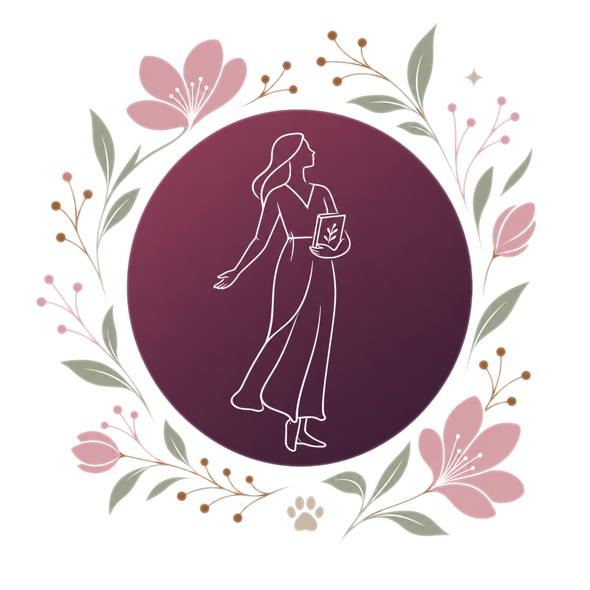
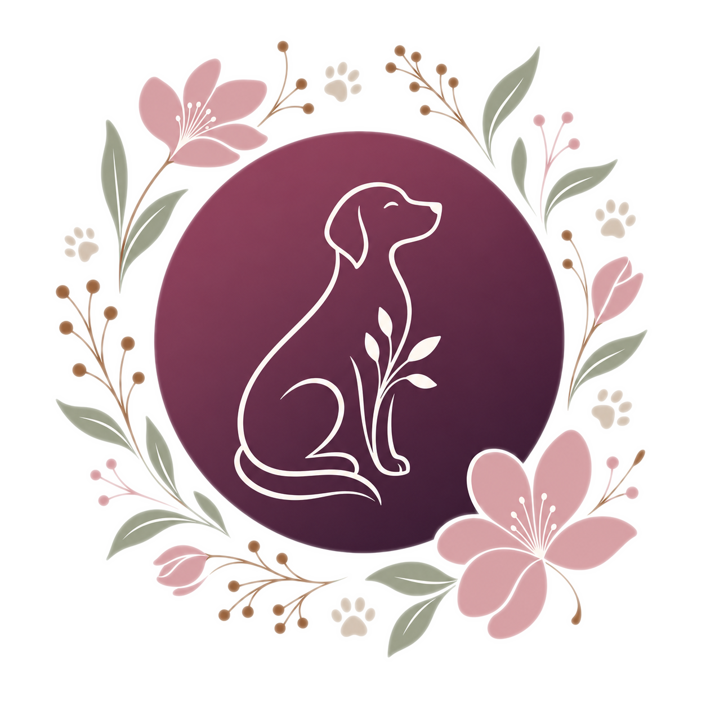
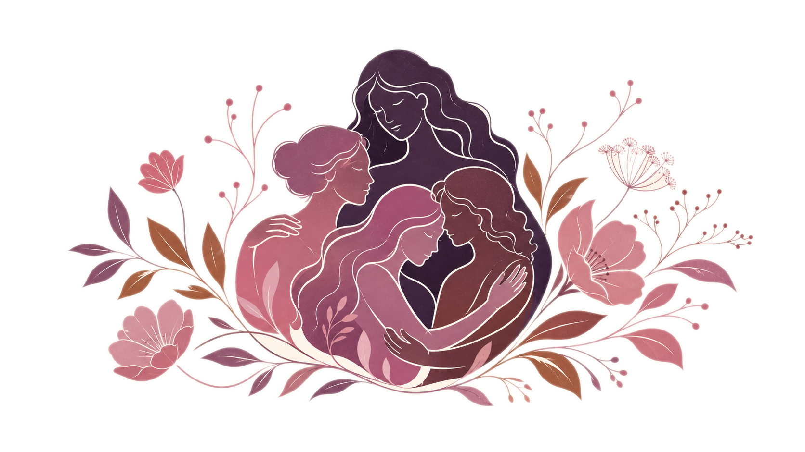
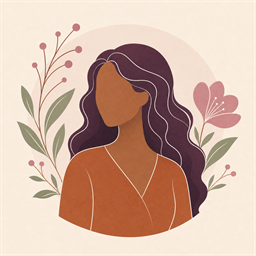

Cuidamos de quem
cuida do mundo
O Instituto ARIA apoia o desenvolvimento integral de mulheres por meio de apoio emocional e proteção animal.
Atendidas
Resgatados
Ativos
Atuação
Nascemos do cuidado,
crescemos com amor
O Instituto ARIA nasceu em Marituba, Pará, com uma missão simples e profunda: ser um espaço de acolhimento real para quem mais precisa. Fundado por Caroline Semiramis, partiu da convicção de que cuidar é um ato político — e que toda pessoa merece ter acesso a saúde, educação e dignidade.
Nossa atuação integra o cuidado humano ao cuidado animal, porque acreditamos que a compaixão não tem espécie. Cada projeto nasce de um olhar atento ao que a comunidade realmente precisa.
"Cuidar não é um privilégio — é um direito. E o ARIA existe para garantir que nenhuma família em Marituba fique sem esse cuidado."— Caroline Semiramis, Fundadora do Instituto ARIA
Nossos projetos
Cada projeto é uma resposta concreta ao que a comunidade nos conta que precisa.

Se Prepara Menina
Oficinas de desenvolvimento pessoal, artesanato e geração de renda para mulheres em situação de vulnerabilidade.
Saiba mais →
Viralatinha
Resgate, cuidado veterinário e adoção responsável de animais em situação de rua em Marituba e região.
Saiba mais →
Rede de Acolhimento
Apoio psicossocial, encaminhamentos e formação em rede para mulheres e famílias em situação de risco.
Saiba mais →Histórias reais
Nomes fictícios para preservar a privacidade de quem partilhou sua história conosco.
"Antes de conhecer o ARIA, eu sentia que não havia saída. As oficinas me devolveram a esperança — e hoje tenho meu próprio negócio de artesanato."
Maria*, 34 anos Participante do Projeto Se Prepara Menina
"O ARIA resgatou meu cachorro quando eu não tinha condição de pagar o veterinário. Eles trataram com tanto amor. Nunca vou esquecer."
Ana*, 27 anos Beneficiária do Projeto Viralatinha"O acompanhamento psicossocial foi o que me deu forças para sair de uma relação abusiva. O ARIA me ajudou a reconstruir minha vida."
Carla*, 41 anos Atendida pela Rede de AcolhimentoSua doação transforma vidas
Com qualquer valor, você contribui para que mais mulheres, crianças e animais recebam o cuidado que merecem.